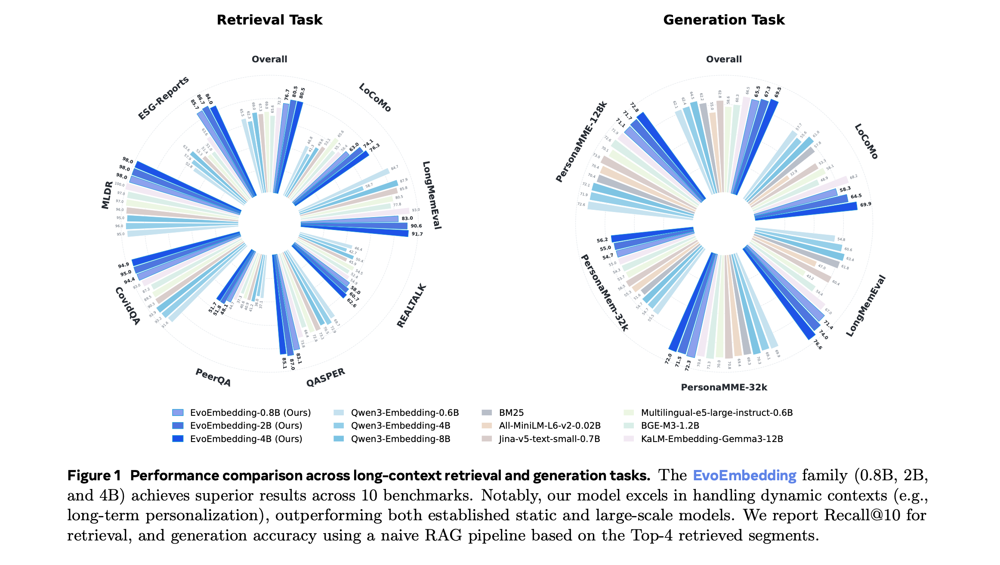
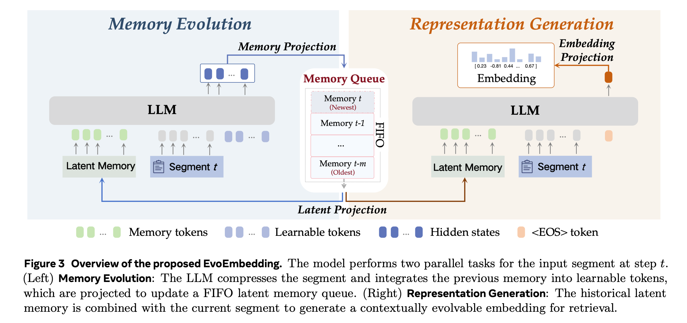

Evolvable
Generates evolvable embeddings using native latent memory.
Evolvable Embedding for Long-Context Retrieval
Nanjing University Corresponding author
Generates evolvable embeddings using native latent memory.
Scales to 10x longer contexts across diverse domains.
Enhances RAG and memory systems as both embedding and reranker.
Born for temporal retrieval with high sensitivity to chronological order.
Ultra-efficient variant, outperforming much larger static baselines.
The optimal balance between inference speed and retrieval accuracy.
Our SOTA flagship, dominating long-context retrieval and memory tasks.

EvoEmbedding jointly performs memory evolution and representation generation in parallel.

CORE FINDINGS
EvoEmbedding achieves superior results across 10 benchmarks, outperforming established static and larger-scale specialist models with smaller parameter sizes.
A standard naive RAG pipeline using EvoEmbedding-4B outperforms complex agentic memory architectures while requiring no explicit memory construction token overhead at test time.
EvoEmbedding works as a drop-in replacement in existing frameworks such as A-MEM and LightMem, improving performance without modifying the core generative LLMs.
EvoEmbedding's latent space remains sensitive to chronological order, helping decouple temporal intents for queries constrained by terms such as "firstly" and "lastly".
@article{nie2026evoembedding,
title={Evolvable Embedding for Long-Context Retrieval},
author={Nie, Chang and Fu, Chaoyou and Shan, Caifeng},
journal={arXiv preprint},
year={2026}
}